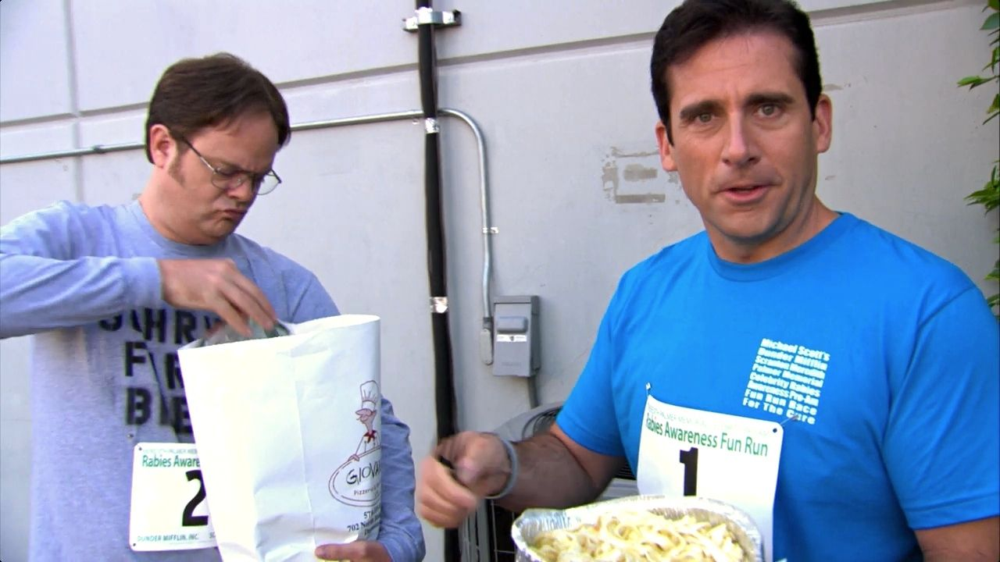

Fettuccine Alfredo inspired by The Office!

Ingredients
Homemade Pasta Dough Ingredients:
- 12 oz all-purpose flour
- 8 oz eggs
- 1 1/2 tsp kosher salt
Fettuccine Alfredo Ingredients:
- 1 Tbsp + 1/2 tsp kosher salt, divided
- 1 1/2 Cups heavy cream, divided
- 2 Tbsp unsalted butter
- 1 tsp freshly ground black pepper
- 9 oz fresh fettuccine Pasta
- 2 oz parmesan cheese, grated
- 1/8 tsp freshly grated nutmeg
Method
Serves: 2-4
Homemade Pasta Dough Method:
- Combine flour, salt, and eggs in a food processor.
- Process for 60 seconds until the douugh ball forms.
- Remove the dough from the processor and form it into a ball.
- wrap the dough tightly and rest ofr a minimum of 30 minutes at room temp or uup to overnight in the fridge.
- Using a pasta roller, work in batches to roll out the dough. Start on the widest setting and decrease the size by two settings with every roll. Roll until the dough reaches the second thinnest setting (or to your preference).
- Cut the dough using a pasta cutting attachment or using a knife into long strands about 1/4 inch wide.
- Dust the pasta in flour and set aside on a large rimmed baking sheet until ready to cook.
Fettuuccine Alfredo Method:
- Bring a medium pot of water with 1 tablespoon of salt to a boil. take about 2 cups of water and transfer it to a large metal mixing bowl. toss the water around the bowl to warm it.
- Remove the water from the bowl and pat dry.
- Add the butter to the warmed bowl along with 2 ounces of parmesan cheese.
- Cook the fresh pasta for 2-3 minutes, then transfer it directly to the mixing bowl.
- Sprinkle another 2 ounces of cheese over the cooked pasta and about 1/4 cup of the pasta water.
- Toss the pasta with tongs until a glossy, thinkened, homogenous sauce forms that coats the pasta well. Add another 1/4 cup of pasta water if necessary.
- Season with salt and sprinklle the remaining 1 ounce of parmesan cheese overtop the pasta.
- Serve Immediately.
The original recipe!
Home Page